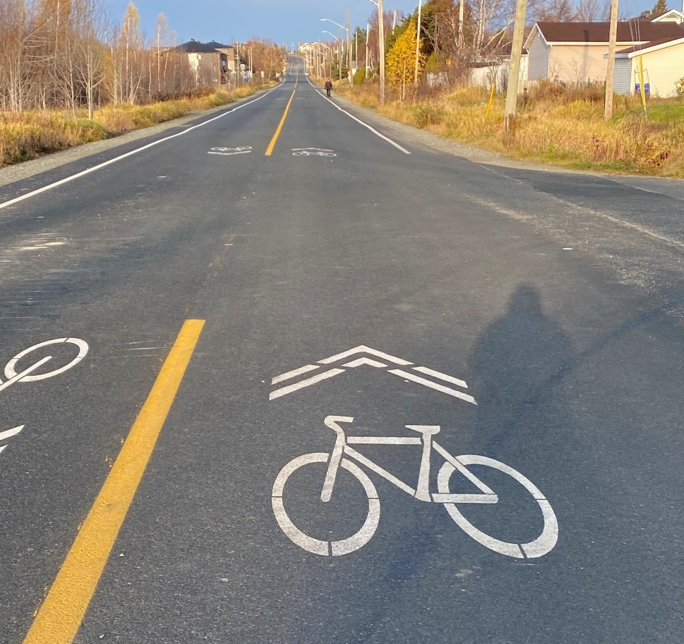
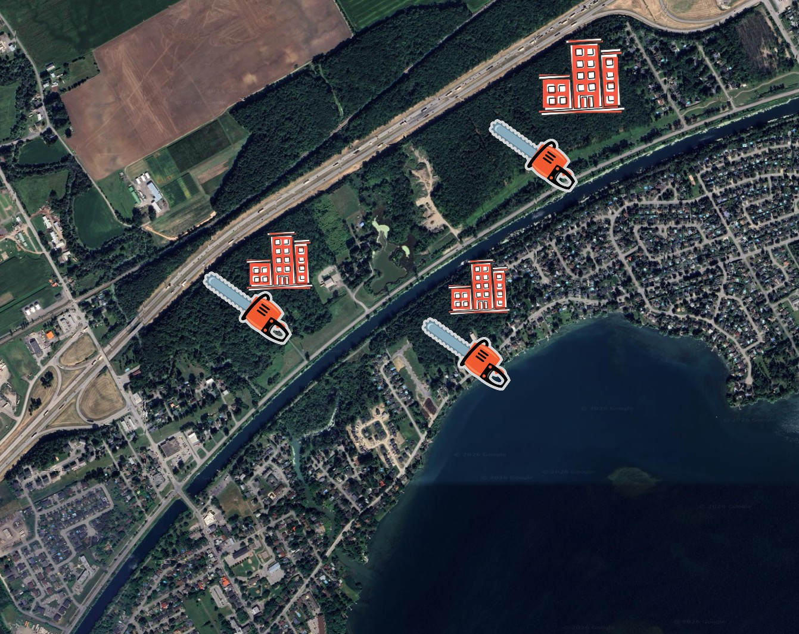

Avril 2026
Séance d'avril – Forêt et vélos : une séance de contrastes
Deux sujets très différents à l'ordre du jour ce soir. Sur l'un, la ville avance vite et bien. Sur l'autre, elle prend son temps pendant que le temps presse.

Les pistes cyclables partagées – une victoire. Le conseil a adopté deux résolutions pour implanter des chaussées désignées pour les vélos sur les rues Legros et Principale. Concrètement : du marquage au sol qui indique aux automobilistes que la rue est partagée avec les cyclistes. Pas de travaux majeurs, pas de retrait de stationnement – mais un signal clair et un changement visible dès cet été.
Ces deux tracés ont quelque chose d'important en commun : ils relient le Parc du Canal de Soulanges au Chemin du Fleuve, deux axes énormément utilisés par les résidents et les visiteurs. Ce lien manquait.
La rue Legros est peu passante – la solution est immédiatement efficace et le trajet sera viable pour les années à venir. La rue Principale, c'est une autre histoire : c'est notre artère commerciale, la plus fréquentée de la ville. Certains diront que du simple marquage au sol ne suffit pas pour protéger les cyclistes sur une rue aussi achalandée. Ils ont raison – pour l'instant.
Voilà pourquoi je trouve ce geste quand même très positif : le projet de réfection du noyau villageois s'en vient. Les deux prochaines années sont consacrées à la planification d'un réaménagement en profondeur de la Principale – une artère qui doit devenir plus sécuritaire, plus conviviale, et mieux adaptée à soutenir nos commerces et à créer un vrai centre-ville vivant. D'ici là, le marquage habitue graduellement les automobilistes à partager la rue. C'est un test à peu de frais. La vraie protection – béton, aménagements physiques – viendra avec la réfection. On avance dans le bon ordre.
C'est ce genre de décision qui me rend optimiste : on ne s'est pas paralysé à attendre le projet parfait. On a posé un geste concret maintenant.

Le zonage de la 338 – victoire et défaite à la fois. Depuis le 10 mars, je tente de forcer le conseil à se pencher sur l'avenir des boisés le long de la route 338. J'avais déposé un avis de motion pour reclassifier ces terrains en zones de conservation. La mairesse a tenté de bloquer la démarche en qualifiant mon avis d'invalide – une position que j'ai contestée par écrit, point par point, sans jamais obtenir de fondement légal solide en retour.
Ce soir, j'ai redéposé mon avis de motion. Quelques minutes plus tard, le conseiller M. Amos a déposé une résolution pour y mettre fin immédiatement. Elle a été adoptée par le conseil. L'effet de gel – cet outil prévu par la loi pour protéger temporairement un territoire pendant qu'on délibère – aura duré en tout et pour tout trois minutes.
J'ai voté contre la résolution d'arrêt. Et j'ai voté contre l'adoption du procès-verbal de mars, qui omettait mon premier avis de motion.
La victoire : le conseil a été saisi de la question. On va se rencontrer pour en discuter en long et en large. C'était mon objectif premier, et je le prends.
La défaite : pendant qu'on planifie des rencontres, les projets avancent. Le réseau d'égouts s'en vient sur la 338. Chaque semaine qui passe rétrécit notre marge de manœuvre. Les développeurs n'attendent pas, eux. Si on veut protéger quelque chose, il faut aller plus vite qu'eux – et ce n'est présentement pas le cas. Ça m'attriste.
Avec les vélos, on a montré ce soir qu'on est capables d'agir vite. J'aimerais voir cette même vitesse appliquée à la protection de nos boisés. La forêt n'attend pas les calendriers municipaux.
La discussion à venir sera importante. Faites-vous entendre : est-ce qu'on conserve ou on développe cette forêt? Formulaire.